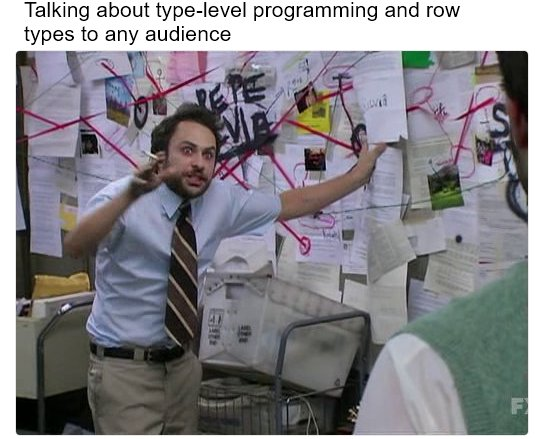

We can create a product of types
data Foo
= Foo Int String
data Bar
= Bar Boolean Int Int
Foo is a named product of Int and String.
Bar is a named product of Boolean, Int, and Int.
purescript-tuples provides a data type that abstracts the syntax of products.
data Tuple a b
= Tuple a b
type Foo = Tuple Int String
type Bar = Tuple Boolean (Tuple Int Int)
type Foo = { x :: Int, y :: String }
type Bar = { x :: Boolean, y :: Int, z :: Int }
type Foo = Record ( x :: Int, y :: String )
type Bar = Record ( x :: Boolean, y :: Int, z :: Int )
newtype Record (r :: # Type)
= Record (StrMap (forall a. a))
Tuple 1 2 /= Tuple 2 1
{ x: 1, y: 2 } == { y: 2, x: 1 }
foo :: forall a b. Tuple a b -> Unit
foo' :: forall a b r. Record ( x :: a, y :: b | r ) -> Unit
foo' { x: 1, y: 2, z: 3 }
We can create a sum of types
data Foo
= FooInt Int
| FooString String
data Bar
= BarBoolean Boolean
| BarInt1 Int
| BarInt2 Int
Foo is a named sum of Int or String.
Bar is a named sum of Boolean, Int, or Int.
purescript-either provides a data type that abstracts the syntax of sums
data Either a b
= Left a
| Right b
type Foo = Either Int String
type Bar = Either Boolean (Either Int Int)
type Foo = Variant ( x :: Int, y :: String )
type Bar = Variant ( x :: Boolean, y :: Int, z :: Int )
newtype Variant (r :: # Type)
= Variant
{ tag :: String
, value :: forall a. a
}
parseInt ::
forall r.
String ->
Variant (success :: Int, typeMismatch :: Unit | r)
parsePositive ::
forall r.
String ->
Variant
( negative :: Unit
, success :: Int
, typeMismatch :: Unit
| r
)
Right (Left 1) :: Either Boolean (Either Int String)
Left (Right 1) :: Either (Either Boolean Int) String
inj (SProxy :: SProxy "x") 1 :: forall r. Variant (x :: Int | r)
foo :: forall a b. Either a b -> Unit
foo' :: forall a b r. Variant ( x :: a, y :: b | r ) -> Unit
foo' (inj (SProxy :: SProxy "z") 3)
foreign import kind Effect
foreign import data Eff :: # Effect -> Type -> Type
foreign import data CONSOLE :: Effect
log :: forall e. String -> Eff (console :: CONSOLE | e) Unit
foreign import data RANDOM :: Effect
randomBool :: forall e. Eff (random :: RANDOM | e) Boolean
main :: Eff (console :: CONSOLE, random :: RANDOM) Unit
main = do
bool <- randomBool
if bool then log "Yep!" else log "Nope!"
purescript-st introduces a data type for local mutatons.
foreign import data ST :: Type -> Effect
foreign import data STRef :: Type -> Type -> Type
newSTRef :: forall a h r. a -> Eff (st :: ST h | r) (STRef h a)
runST ::
forall a r.
(forall h. Eff (st :: ST h | r) a) ->
Eff r a
purescript-exceptions provides functions for working with synchronous exceptions
foreign import data EXCEPTION :: Effect
foreign import data Error :: Type
throwException ::
forall a eff.
Error ->
Eff (exception :: EXCEPTION | eff) a
catchException ::
forall a eff.
(Error -> Eff eff a) ->
Eff (exception :: EXCEPTION | eff) a ->
Eff eff a
Based on Extensible Effects
newtype VariantF (r :: # Type) a
= VariantF
{ tag :: String
, value :: forall f. f a
, map :: forall b c f. (b -> c) -> f b -> f c
}
newtype Run r a = Run (Free (VariantF r) a)